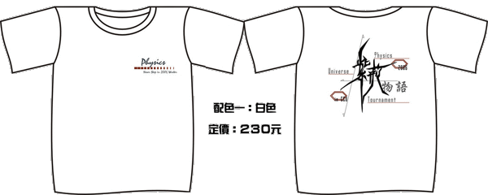
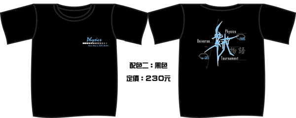
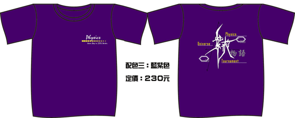
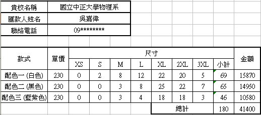

|
|
| |
|
| |
˙
本次冬季大物盃我們設計有三種配色的紀念T恤，皆為京川布
，各款式之參考圖樣及價錢如下所示。
˙
布料說明：京川布為新開發的布料，內為排汗網眼布（不黏身透氣）外為伸縮棉T（美觀），綜合兩者
優點的新布料，不僅排汗且不會像一般排汗布會呈半透明且印刷品質較好，今年有多項盃賽
都採用此種布料。
˙
紀念衣預購DM 下載 ( 歡迎各校系下載列印參考)
|
|

(點選可看大圖) |
|

(點選可看大圖) |
|

(點選可看大圖)
(以上圖例僅供參考，一切以實際衣服為準) |
|
|
˙ 請各校系由此下載
紀念衣預購統計表 ，填妥各款式／尺寸的購買數量。
˙
11/03 (五) 前寄回至
大物盃專用信箱
。
˙
11/06 (一) 下午
5 點 前完成匯款 ( 匯款帳號如
下，與報名費同 )
。
郵局匯款
(郵局代碼：700)
戶
名：國立中正大學物理系學會
局 號：0051346
帳 號：0006390
˙ 衣服如有多供比賽當日販售，但數量不多，主要以預購為主。
˙
我們收到報名費後將以電話方式通知貴系聯絡人確定預購完成。若匯款後未接到通知請主動聯絡我們，
並保留單據以供日後查詢。預購截止後我們將立即送印，預計於
12/3 寄發貴校所訂購的紀念衣。 |
|
|
|
規格\尺寸 |
XS |
S |
M |
L |
XL |
2XL |
3XL |
|
肩寬(cm) |
41 |
43 |
45 |
47 |
49 |
51 |
53 |
|
衣長(cm) |
61 |
63 |
65 |
67 |
70 |
72 |
75 |
|
下擺寬(cm) |
47 |
49 |
51 |
53 |
55 |
57 |
59 |
|
建議身高(cm) |
155以下 |
155-160 |
160-165 |
165-170 |
170-175 |
175-180 |
180-185 |
|
|
|
|

( 本範例填寫之資料僅供示範用，非本系之實際購買數量 )
|